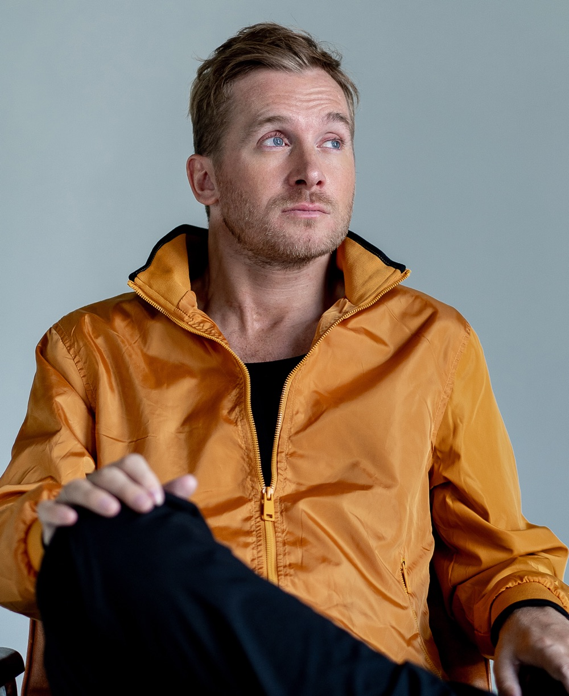
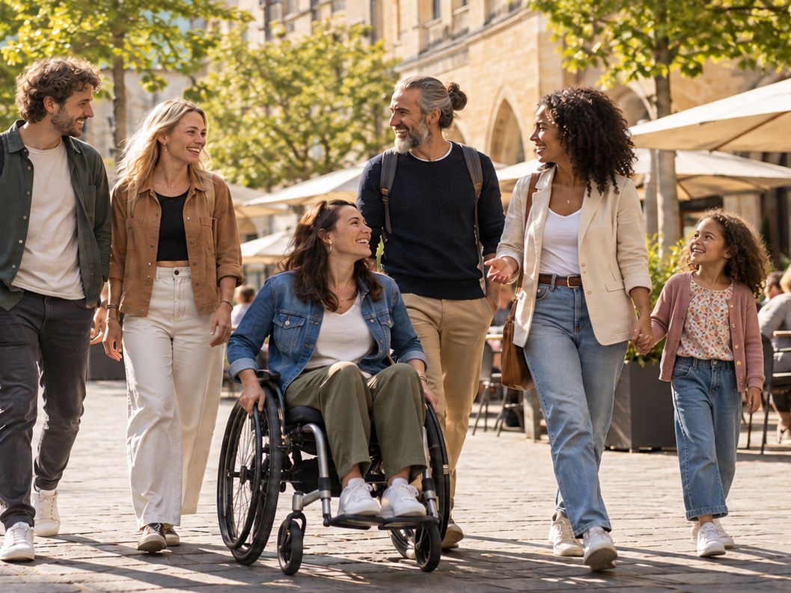
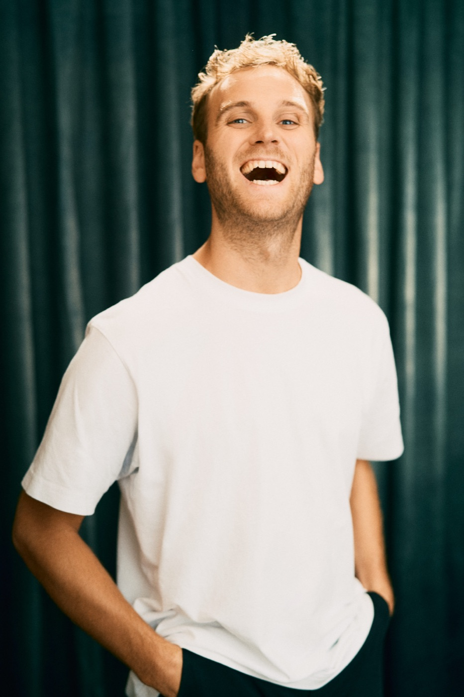

Interview
Interview mit Samuel Koch
„Barrieren sind für mich nicht nur Stufen oder das Fehlen von Aufzügen, sondern vor allem die Hürden in den Köpfen.“
Foto: Sergej Falk
Hier findest du Orte in Münster mit konkreten Angaben zur Zugänglichkeit, statt pauschalem „barrierefrei“. Dazu Interviews, Podcast und Hilfsmittel.

Oder starte hier:
Bevor du losgehst: Ist der Eingang stufenlos? Gibt es ein WC, das für dich passt? Hier stehen die konkreten Merkmale. Die Angaben stammen von den Betrieben und sind nicht vor Ort geprüft.

Interview
„Barrieren sind für mich nicht nur Stufen oder das Fehlen von Aufzügen, sondern vor allem die Hürden in den Köpfen.“
Foto: Sergej Falk

Interview
Interview mit Dr. Leon Windscheid für gtinfo.
Kolumne
Die Hello-Heroes-Kolumne von Anuschka Bayer.
Podcast
Im Gespräch mit Schauspielerin und Comedian Lisa Feller.
Melde dich für den Newsletter an. Du bekommst neue Geschichten, Produkte und Einblicke. In der Demo wird nichts gesendet.